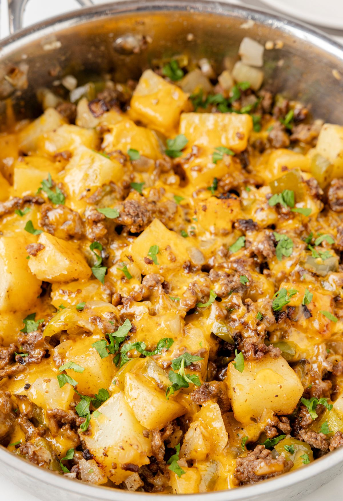

Home
Tex-Mex Ground Beef and Potato Skillet

Description
This loaded Tex-Mex ground beef and potato skillet uses convenient frozen
hash browns and corn, fresh zucchsini, and RO-TEL diced tomatoes with
green chiles for a tasty one-dish meal. Serve with tortilla chips, or
warm, buttered flour tortillas.
Ingredients
- Ground beef
- Hash browns
- Corn kernals
- Zucchini
- Beef broth
- Canned tomatoes
- Green chilies
- Taco seasoning (mild or hot)
- Ground cumin
- Salt and pepper
- Shredded cheddar cheese
- Sour cream
- Green onions
Instructions
-
Heat a large skillet over medium heat. Cook and stir ground beef,
breaking up the pieces as it cooks, until browned and crumbly. 3 to 5
minutes. Drain off excess fat.
-
Add potatoes, corn, zucchini, beef broth, RO-TEL, taco seasoning, and
cumin. Season with salt and pepper. Bring to a boil, cover, reduce heat,
and simmer until vegetables are tender, 20 to 25 minutes. Taste and
adjust seasonings.
-
Stir in Cheddar, and allow to melt. Remove from heat. Garnish with
dollops of sour cream and sliced green onions, and serve immediately.